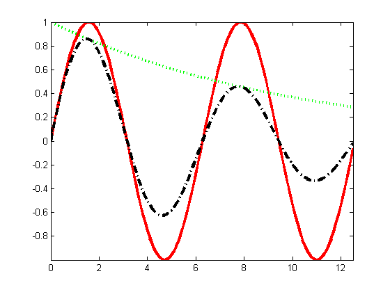
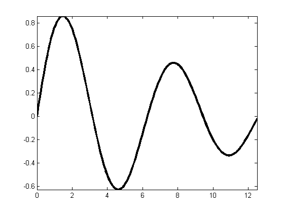

A non convex function in 1d: exponentially damped sinuosoid
%xs = 0:0.1:(10*pi); % This file is from pmtk3.googlecode.com xs = 0:0.1:(4*pi); f1 = sin(xs); f2 = exp(-0.1*xs); f3 = f1 .* f2; figure; plot(xs, f1, 'r-', xs, f2, 'g:', xs, f3, 'k-.', 'linewidth', 3); axis tight; figure; h = plot(xs, f3, 'k-', 'linewidth', 3); axis tight; 